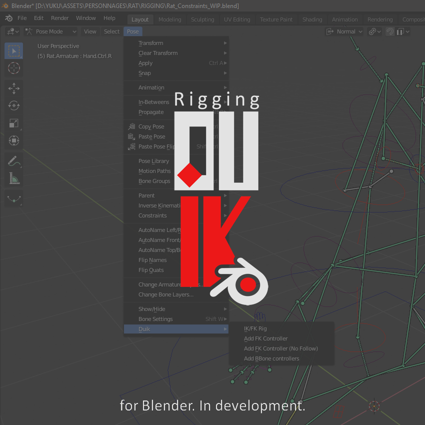

RxLab Experimental Tools
Welcome to the Rainbox Experimental tools add-on for Blender documentation.
Introduction
This add-on contains some different tools being developped at Rainbox Laboratory, which will ultimately be included in Duik for Blender.
Duik for Blender will be a rigging and animation add-on, focused in 2D and cut-out rigging, but also adding nice 3D rigging tools. It is called Duik like the rigging and animation tool set for After Effects also developped by Rainbox Lab. and it is going to share the same rigging process.
All these tools are still experimental as we’re very early in the development process, but we’ve deciced to make the add-on available anyway so you can already test and use some of these tools, as the development will probably be a long process.
Contents
- Installation
- Settings
- Rigging
- Animation
- 2D Animation
- Changelog
Duik

Duik is originally a comprehensive animation and rigging toolset for Adobe After Effects.
It all began as a joke… When will Duik be available for Blender?
Duik for Blender aims to reproduce the rigging process developped in After Effects but in blender, with predefined Armatures and bones for limbs or complete characters and a comprehensive yet easy to animate auto-rig, along with some advanced rigging and animation tools for experts.
License
Software
Copyright (C) 2020 Nicolas Dufresne and Contributors.
This program is free software; you can redistribute them and/or modify them under the terms of the GNU General Public License as published by the Free Software Foundation; either version 3 of the License, or (at your option) any later version.
This program is distributed in the hope that it will be useful, but WITHOUT ANY WARRANTY; without even the implied warranty of MERCHANTABILITY or FITNESS FOR A PARTICULAR PURPOSE. See the GNU General Public License for more details.
You should have received a copy of the GNU General Public License along with DuBuilder. If not, see http://www.gnu.org/licenses/.
This Documentation
Copyright (C) 2020 Nicolas Dufresne and Contributors.
Permission is granted to copy, distribute and/or modify this document under the terms of the GNU Free Documentation License, Version 1.3 or any later version published by the Free Software Foundation;
with no Invariant Sections, no Front-Cover Texts, and no Back-Cover Texts.
A copy of the license is included in the section entitled “Documentation License”.